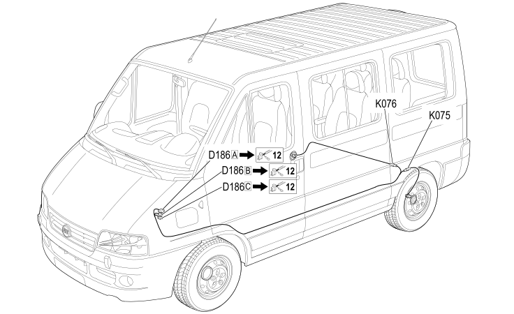

63 ABS
- Path
- Electrical equipment > 2 WIRING > 63 ABS
- Kind
- wiring harness
- Applies to
- all engines; all production periods; only with equipment: ASR system
- Interactive page
- https://sloeber94.github.io/elrnDB-fDct/en/#/244002287
Applies to: all engines; all production periods; only with equipment: ASR system

Topics that link to this page (17)
- C012 ABS FRONT EARTH (ABS)
- C012 ABS FRONT EARTH (ABS)
- D186A FRONT/ABS COUPLING (ABS)
- D186A FRONT/ABS COUPLING (ABS)
- D186B FRONT/ABS COUPLING (ABS)
- D186B FRONT/ABS COUPLING (ABS)
- D186C FRONT/ABS COUPLING (ABS)
- D186C FRONT/ABS COUPLING (ABS)
- K070 LEFT FRONT WHEEL SENSOR FOR ABS (ABS)
- K070 LEFT FRONT WHEEL SENSOR FOR ABS (ABS)
- K071 RIGHT FRONT WHEEL SENSOR FOR ABS (ABS)
- K071 RIGHT FRONT WHEEL SENSOR FOR ABS (ABS)
- K075 LEFT REAR WHEEL SENSOR FOR ABS (ABS)
- K075 LEFT REAR WHEEL SENSOR FOR ABS (ABS)
- K076 RIGHT REAR WHEEL SENSOR FOR ABS. (ABS)
- K076 RIGHT REAR WHEEL SENSOR FOR ABS. (ABS)
- M050 ABS CONTROL UNIT (ABS)